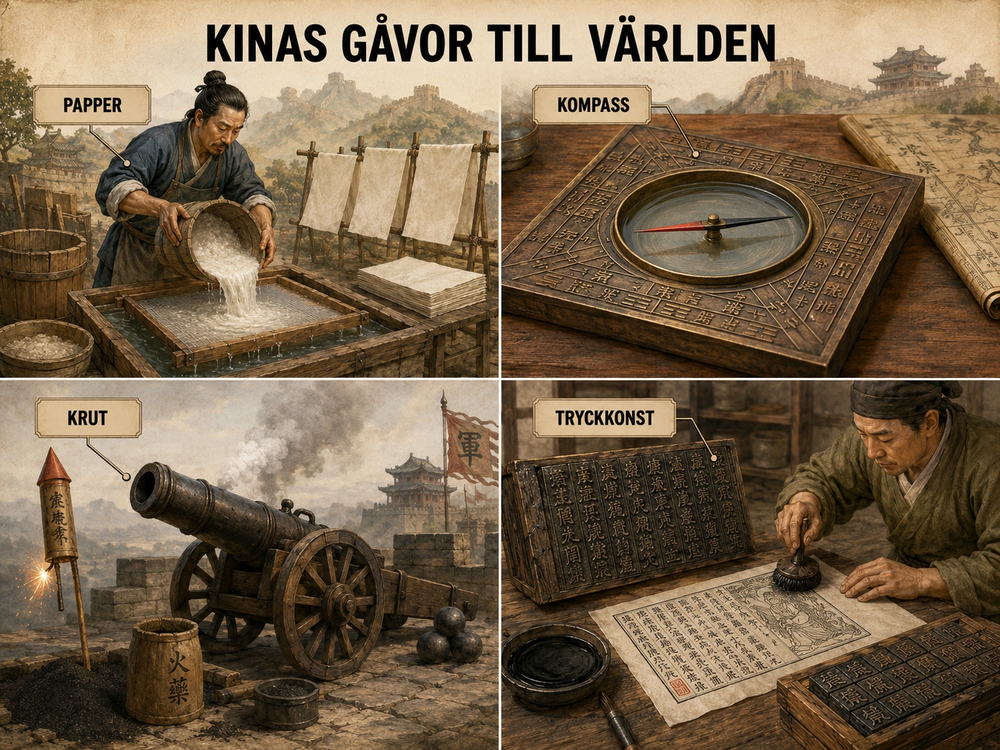

Under medeltiden låg Kina mycket långt bort från Europa. De flesta européer reste aldrig dit och visste knappt något om landet. Ändå påverkade Kina Europa mer än någon förstod. Påverkan skedde indirekt — det betyder att uppfinningar och idéer reste genom många mellanhänder innan de nådde Europa: först till den muslimska världen, sedan via arabiska köpmän och lärda, och slutligen till italienska handelsstäder.

Kina var en av världens mest avancerade civilisationer. Där fanns stora städer, skickliga hantverkare och tekniska uppfinningar som européerna ännu inte hade. Fyra av dessa kom att förändra Europa.
Papper uppfanns i Kina långt före medeltiden. Tidigare hade européer skrivit på pergament, behandlade djurhudar, som var dyrt och tog tid att tillverka. Papper var mycket billigare. När det nådde Europa kunde fler böcker, brev och kontrakt skrivas. Det hjälpte handeln, städerna, universiteten och kungarnas förvaltning att växa.
Kompassen var en magnetisk nål som visade riktning. När den spreds västerut blev den ovärderlig för sjöfarten. Tidigare hade sjömän varit beroende av kustlinjer och stjärnor. Med kompassen kunde fartyg navigera även när det var molnigt eller långt från land.
Krut uppfanns i Kina och användes först i fyrverkerier. När det reste västerut förändrades krigföringen i Europa. Kanoner och handeldvapen började användas under senmedeltiden. Borgmurar som tidigare hade varit oövervinneliga kunde nu skjutas sönder.
Tryckkonst hade tidiga former i Kina långt före Europa, men det stora genombrottet i Europa kom först på 1400-talet med Gutenbergs tryckpress. Då blev böcker billigare och kunskap spreds snabbt.
Kinas påverkan visar något viktigt: Europa var inte isolerat. Det utvecklades i ständig kontakt med andra civilisationer — även de man aldrig själv besökte.
Under medeltiden låg Kina mycket långt bort från Europa. De flesta européer reste aldrig dit och visste inte särskilt mycket om landet. Ändå påverkade Kina Europa mer än många förstod. Påverkan skedde oftast indirekt. Det betyder att idéer och uppfinningar inte alltid kom direkt från Kina till Europa, utan färdades genom många mellanhänder: köpmän, arabiska lärda, persiska handelsmän, mongoliska riken och italienska städer som Venedig och Genua.
Kina var under medeltiden ett av världens mest avancerade områden. Där fanns stora städer, skickliga hantverkare, utvecklad administration och många tekniska uppfinningar. Flera av dessa uppfinningar kom med tiden att förändra Europa.
Papper
En av de viktigaste kinesiska uppfinningarna var papperet. I Europa hade man länge skrivit på pergament, alltså behandlade djurhudar. Det var dyrt och tog lång tid att tillverka. Papper var mycket billigare och lättare att producera. Uppfinningen hade först spridits från Kina till den muslimska världen och därifrån vidare till Europa. När papper blev vanligare kunde fler böcker, brev, kontrakt och räkenskaper skrivas. Det hjälpte handeln, städerna, universiteten och kungarnas förvaltning att växa.
Kompassen
En annan viktig uppfinning var kompassen. Kineserna använde magnetiska nålar för att hitta riktning. När kompassen spreds västerut blev den mycket viktig för sjöfarten. Tidigare var sjömän mer beroende av kustlinjer, stjärnor och erfarenhet. Med kompassen kunde fartyg navigera säkrare, även när det var molnigt eller när man befann sig längre från land. På sikt gjorde detta det lättare för européer att resa längre över haven. Kompassen blev därför en del av den tekniska utveckling som senare gjorde upptäcktsresorna möjliga.
Krut
Kina uppfann också krut. Från början användes krut bland annat i fyrverkerier och enkla vapen. När krutets användning spreds västerut förändrades krigföringen i Europa. Under senmedeltiden började kanoner och handeldvapen användas mer. Detta gjorde att riddare och borgar blev mindre överlägsna än tidigare. En stark borg kunde fortfarande vara viktig, men murar som hade skyddat adeln i flera hundra år kunde nu skjutas sönder med kanoner. På lång sikt bidrog detta till att kungarna blev starkare, eftersom det var dyrt att köpa kanoner och avlöna soldater. Den som hade pengar kunde bygga en modernare armé.
Tryckkonst
Även tryckkonsten hade tidiga former i Kina. Kineserna använde träblockstryck långt före Europa och utvecklade också tidiga former av lösa typer. I Europa blev den stora förändringen Gutenbergs tryckpress på 1400-talet. Man ska vara försiktig med att säga att européerna bara kopierade Kina, eftersom Europas tryckteknik utvecklades på ett eget sätt. Men Kina visar att idén att mångfaldiga text med teknik fanns långt tidigare i öst. När tryckkonsten slog igenom i Europa förändrades samhället kraftigt: böcker blev billigare, kunskap spreds snabbare och fler människor kunde ta del av idéer.
Mer än uppfinningar
Kina påverkade också Europa genom varor som väckte nyfikenhet. Siden var den mest berömda varan. Det var ett tyg som européer uppfattade som oerhört vackert, lätt och lyxigt. Kinesiskt porslin blev också eftertraktat, även om det framför allt blev ännu viktigare under senare epoker. Sådana varor fick européer att förstå att det fanns mäktiga och rika civilisationer långt bortom deras egen värld.
Men Kina påverkade inte bara Europa genom saker. Det handlade också om idéer om vad ett samhälle kunde vara. Genom reseberättelser, till exempel Marco Polos skildringar, fick européer höra om stora städer, papperspengar, avancerad handel, effektiva vägar och en mäktig kejsare. Alla berättelser var inte exakta, och européer kunde missförstå mycket. Men bilden av Kina och Asien gjorde Europa mer nyfiket på världen utanför den egna kontinenten.
Kinas påverkan på Europa under medeltiden kan därför sammanfattas så här: Kina var inte en direkt lärare för Europa i varje fråga, men många kinesiska uppfinningar och idéer färdades långsamt västerut. När de nådde Europa förändrade de handel, sjöfart, krigföring, skrivande och kunskapsspridning.
En osynlig påverkan
För att förstå Kinas roll i medeltidens Europa måste man förstå något som inte var självklart för människorna då: att idéer kan resa utan att människor reser. En kinesisk uppfinning kunde nå Venedig utan att en enda kines satt sin fot i Europa. Den kunde gå genom hundra händer, översättas till fem språk, ombearbetas i Bagdad, justeras i Damaskus, och först då — som något "arabiskt" eller "österländskt" — komma till européernas kännedom.
Detta är vad historiker kallar indirekt påverkan. Och det är den som dominerar Europas medeltida förhållande till Kina. Mycket av det vi i dag tänker på som typiskt europeiskt — papper, kompass, kanon, tryckkonst — har sitt ursprung tusentals mil österut. Men det kom inte direkt. Det kom i kedja.
Papperets resa
Papperets ursprung dateras ofta till år 105 e.Kr., när den kinesiska hovämbetsmannen Cai Lun krediteras med en förbättrad pappersmetod baserad på mullbärsbast, lin och hampa. Tekniken förblev en kinesisk hemlighet i flera århundraden.
Den stora vändpunkten kom år 751, då en arabisk armé besegrade en kinesisk vid slaget vid Talas i Centralasien. Bland krigsfångarna fanns kinesiska papperstillverkare. Inom kort växte ett pappersbruk fram i Samarkand, och därifrån spreds tekniken vidare till Bagdad, Damaskus, Kairo, Marocko, och slutligen via det muslimska Spanien till det kristna Europa. När papperskvarnar började byggas i Italien under 1200-talet hade tekniken alltså rest i över tusen år och passerat genom minst tre civilisationer.
I Europa fick papperet sin kanske största betydelse i kombination med en helt annan uppfinning — tryckpressen. Men det kommer vi till.
Kompassen — från andlighet till sjöfart
Den magnetiska kompassen användes i Kina långt före den blev ett sjöfartsverktyg. Tidiga kinesiska kompasser var små skedformade föremål av magnetit som placerades på en bronsskiva, och de användes inom feng shui — den läran om hur byggnader skulle orienteras för andlig harmoni. Först senare upptäcktes dess praktiska användning för navigation.
När idén nådde Europa under 1100- och 1200-talen — sannolikt via arabiska eller persiska sjöfarande — gick utvecklingen snabbt. Européer hade redan en omfattande sjöfart i Medelhavet, och kompassen tillät den att expandera. Italienska skeppare kunde nu segla även i molntäckta vintermånader. Längre resor blev möjliga. Och i förlängningen — det är en stor förlängning, men en verklig — gjorde kompassen Vasco da Gamas resa runt Afrika och Columbus färd över Atlanten möjliga.
Krut — från odödlighet till destruktion
Krutets historia är historiens kanske mest ironiska. Det uppfanns av kinesiska taoistiska alkemister som letade efter ett odödlighetspiller. Genom att blanda salpeter, svavel och träkol hoppades de skapa ett magiskt elixir. I stället skapade de något som kunde döda.
Den första kinesiska användningen var i fyrverkerier och religiösa ceremonier. På 1000-talet började kineserna också använda krut i enklare vapen — bambukanoner, eldlansar, primitiva bomber. Men det var i Europa som krutet under 1300-talet utvecklades till kanonen i den form vi känner.
Varför det skedde just i Europa, och inte i Kina, är en av historiens öppna frågor. Kanske för att Europas politiska splittring — många små kungariken som ständigt krigade — skapade högre tryck att perfekta vapen. Kanske för att kineserna såg krutet mer som ett medel för avskräckning och ceremoni. Vi vet inte säkert. Men vi vet att krutet, när det nådde europeisk smedjekonst och europeiska furstars krigsbehov, förvandlades till ett vapen som skulle förändra medeltidens slut.
Tryckkonstens paradox
Här blir berättelsen särskilt intressant — för det är ett av få fall där européerna kan sägas ha "vunnit" över sin asiatiska föregångare.
Träblockstryck — där en hel sida skars ut i ett träblock som färgades och pressades mot papper — användes i Kina från 600-talet. Världens äldsta bevarade tryckta bok, Diamantsutran, är kinesisk från år 868. På 1040-talet utvecklade dessutom den kinesiske uppfinnaren Bi Sheng en form av lösa typer gjorda av lera. Tekniken fanns alltså redan i Kina i 400 år innan Gutenberg.
Men i Kina slog idén aldrig fullt igenom som massproduktion. Anledningen var språket: det kinesiska skriftspråket har tusentals tecken. För att trycka en bok med lösa typer skulle man behöva ha tusentals olika typer i lager — det blev opraktiskt. Träblockstryck var enklare för kinesiska förhållanden.
I Europa, med ett alfabet på 24 bokstäver, var lösa typer perfekt. När Gutenberg på 1450-talet i Mainz utvecklade sin tryckpress med lösa metalltyper, fanns plötsligt en teknisk lösning som passade både skriftspråket och de växande städernas läsbehov. Inom decennier hade tryckpressen revolutionerat Europa.
Den större lärdomen
När du nu ser bilden av medeltidens Europa, är det värt att hålla fast vid två saker.
Den ena är att Europa lärde sig av Kina och den muslimska världen mer än det själv kanske visste. Mycket av det europeiska "underverket" — universitet, banker, sjöfart, böcker, kanoner — byggde på import.
Den andra är att teknik aldrig är "ren". Den färdas genom människor, översätts, missuppfattas, anpassas, vidareutvecklas. Papperet som lämnade Cai Luns verkstad år 105 var inte samma papper som kom till Venedig 1200 år senare. Men det var fortfarande papper, och det var fortfarande från Kina. Stora idéer reser långt, och vinner på resan ofta något, men förlorar också något — sina ursprungsnamn, sin första sammanhang, ibland minnet av var de kom från.
Sidenvägen var inte en enda väg. Den var ett stort nätverk av handelsvägar mellan Kina, Centralasien, Mellanöstern och Europa. Varor färdades med karavaner över land och med skepp över hav. En vara kunde byta ägare många gånger innan den nådde fram. En kinesisk sidenrulle kunde säljas till en köpman i Centralasien, sedan till en arab, sedan till en italienare — och först då dyka upp i en europeisk stad.
![En atlas-karta över Sidenvägens nätverk från Kina i öster till Italien i väster, med Centralasien, Persien och Mellanöstern emellan. Bruna karavanvägar streckade med små karavanikoner. Knutpunkter utmärkta med stadsikoner: Chang'an, Samarkand, Bukhara, Bagdad, Damaskus, Konstantinopel och Venedig. Pilar visar varornas rörelse västerut. I nedre vänstra hörnet en vinjett med lyxvaror staplade: en sidenrulle, pepparkorn och kanelstänger, en porslinsskål, en påse med ädelstenar. I nedre högra hörnet en karavan av kameler i öken.](img/kina-sidenvagen.webp)
För Europa var handeln med lyxvaror mycket viktig. De mest eftertraktade varorna var siden, kryddor, ädelstenar, parfymer och porslin. Kryddor som peppar, kanel och nejlika användes för smak, medicin och status. Siden visade rikedom och makt. Den som bar sidenkläder visade att han eller hon tillhörde samhällets översta skikt.
Eftersom lyxvarorna var dyra kunde handeln ge stora vinster. Varje mellanhand längs vägen lade till sin egen vinst, och därför kostade en säck peppar i Venedig hundratals gånger mer än samma säck hade kostat i Indien. Det gjorde varorna ännu mer exklusiva.
Vissa europeiska städer blev mycket rika på handeln. Särskilt viktiga var Venedig, Genua och Florens i norra Italien. Venedig hade ett perfekt läge vid Medelhavet och kunde handla med östra Medelhavet. Därifrån fördes varor vidare in i Europa. Italienska köpmän blev de viktigaste länkarna mellan öst och väst.
Handeln förändrade också Europas ekonomi. Pengar blev viktigare än byteshandel. Köpmän behövde räkna vinster, låna pengar, försäkra skepp och skriva avtal. Det ledde till att banker, växelbrev och bokföring utvecklades.
Sidenvägen flyttade inte bara varor. Den flyttade också idéer, kunskap och uppfinningar — och tyvärr också sjukdomar. Digerdöden spreds delvis längs samma vägar som handeln. Kontakt mellan samhällen kan föra med sig både utveckling och katastrof.
På sikt växte Europas vilja att hitta egna vägar till Asien. Det blev en av huvudorsakerna till de stora upptäcktsresorna under nästa epok.
Sidenvägen var inte en enda väg, utan ett stort nätverk av handelsvägar mellan östra Asien, Centralasien, Mellanöstern och Europa. Varor kunde färdas med karavaner över land, med skepp över hav och genom många olika handelsstäder. En vara kunde byta ägare många gånger innan den nådde Europa. En kinesisk sidenrulle kunde till exempel säljas till en köpman i Centralasien, sedan till en persisk eller arabisk handelsman och till slut hamna hos italienska köpmän vid Medelhavet.
Det viktigaste med Sidenvägen var inte bara att människor flyttade varor. Den skapade också kontakt mellan världar. Europa, den muslimska världen, Indien, Centralasien och Kina bands samman. Även om de flesta människor aldrig reste hela vägen, kunde varor, idéer, tekniker och nyheter röra sig steg för steg mellan olika samhällen.
Lyxvarornas värde
För Europa var handeln med lyxvaror mycket viktig. De mest eftertraktade varorna var sådant som siden, kryddor, ädelstenar, parfymämnen, färgämnen och exklusiva tyger. Kryddor kunde användas för smak, medicin och status. Siden visade rikedom och makt. Den som bar sidenkläder visade att han eller hon tillhörde samhällets översta skikt. Lyxvaror var alltså inte bara praktiska saker. De var också symboler.
Eftersom lyxvarorna var dyra kunde handeln ge stora vinster. Det gjorde att vissa europeiska städer blev mycket rika. Särskilt viktiga var handelsstäder i norra Italien, till exempel Venedig, Genua och Florens. Venedig hade ett mycket bra läge vid Medelhavet och kunde handla med områden i östra Medelhavet. Därifrån kunde varor från Asien föras vidare in i Europa. På så sätt blev italienska köpmän viktiga länkar mellan öst och väst.
Ekonomins förändring
Handeln bidrog till att Europas ekonomi förändrades. Under tidig medeltid hade mycket av ekonomin byggt på jordbruk, naturahushållning och lokala byar. Men när handeln växte blev pengar viktigare. Köpmän behövde räkna vinster, låna pengar, försäkra skepp och skriva avtal. Det ledde till att banker, växelbrev och mer avancerad bokföring utvecklades. Handeln med lyxvaror var alltså en del av övergången från ett mer lokalt jordbrukssamhälle till ett mer handelsinriktat samhälle.
Sidenvägen påverkade också Europas städer. Där handeln ökade växte hamnar, marknader och hantverk. Fler människor kunde försörja sig som köpmän, sjömän, bärare, växlare, skrivare och hantverkare. Städerna blev platser där människor möttes, där pengar cirkulerade och där nya idéer kunde spridas. Detta bidrog till att adelns gamla makt, som byggde på jordägande, långsamt började utmanas av rika borgare och köpmän.
Vägens faror
Samtidigt ska man komma ihåg att handeln med Asien inte var enkel. Vägarna var långa och farliga. Karavaner kunde drabbas av rövare, krig, öken, bergspass och hårt väder. Sjöfart kunde hotas av stormar och pirater. Därför blev varorna dyra när de till slut nådde Europa. Ju fler mellanhänder som var inblandade, desto mer steg priset. Det gjorde lyxvarorna ännu mer exklusiva.
Mer än varor
Sidenvägen förde också med sig kunskap. Genom kontakterna med den muslimska världen och Asien fick européer tillgång till matematik, astronomi, medicin, kartkunskap och teknik. Allt detta kom inte från Kina, men Sidenvägens handelsnätverk gjorde det möjligt för kunskap från många delar av världen att röra sig. Europa var alltså inte isolerat. Det medeltida Europa utvecklades i kontakt med andra civilisationer.
Men handelsvägarna kunde också sprida sjukdomar. Digerdöden på 1300-talet spreds troligen längs samma stora kontaktvägar som användes för handel. Det visar en viktig historisk princip: kontakt mellan samhällen kan föra med sig både utveckling och katastrofer. Varor, idéer och människor rör sig längs vägarna, men ibland också smittor.
Mot havet
På lång sikt ökade handeln med lyxvaror Europas vilja att hitta egna vägar till Asien. Europeiska köpmän ville slippa dyra mellanhänder och få direkt tillgång till kryddor, siden och andra varor. Detta blev en viktig orsak till de stora upptäcktsresorna under nästa epok. När portugiserna seglade runt Afrika och när Columbus seglade västerut var målet inte främst att "upptäcka en ny värld". Målet var att hitta handelsvägar till Asiens rikedomar.
Sidenvägens betydelse för Europa var därför mycket stor. Den gav Europa tillgång till lyxvaror, men också till idéer, teknik och kunskap. Den gjorde vissa städer rika, stärkte köpmännen och bidrog till att pengar och handel blev viktigare. Samtidigt ökade Europas nyfikenhet på världen utanför kontinenten. Sidenvägen blev därmed en bro mellan medeltiden och den nya tid som skulle komma efteråt.
Namnet som aldrig användes
Innan vi ens börjar berätta om Sidenvägen finns en sak att veta som de flesta inte vet: under medeltiden använde ingen uttrycket "Sidenvägen". Namnet myntades av den tyske geografen Ferdinand von Richthofen så sent som år 1877. För medeltidens köpmän fanns ingen "väg" — det fanns rutter, marknader, städer, gränspass, karavanserajer, hamnar. Det fanns ett gigantiskt nätverk utan namn, utan karta, utan central administration. Varje köpman kände bara sin egen del.
Att kalla det "Sidenvägen" är alltså i någon mening en efterhandskonstruktion. Men det är en användbar sådan, för det fanns verkligen ett sammanhängande system av handelskontakter över Eurasien — även om de som rörde sig längs det aldrig såg helheten.
Tre stora etapper
Geografiskt kan vi grovt dela in nätverket i tre delar.
Östra delen — från kinesiska kejsarstaden Chang'an (dagens Xi'an) västerut genom oaserna i Tarimbäckenet, runt Taklamakanöknen, över Pamirpassen ned till Centralasien. Här rörde sig framför allt kinesiska och centralasiatiska köpmän.
Centralasiatiska delen — från Samarkand och Bukhara genom Persien till Bagdad och Damaskus. Här var handeln i huvudsak persisk, arabisk och senare turkisk.
Västra delen — från Damaskus och Alexandria genom Medelhavet till Konstantinopel, Venedig och Genua. Här tog italienska sjörepubliker över. Varor kunde sedan färdas vidare landvägen norrut till Flandern, eller över Alperna till Tyskland.
Sällan reste en köpman hela vägen. Marco Polo är just så berömd för att han var ett undantag. De flesta varor flyttades stafettvis — köptes upp i en marknadsstad, transporterades till nästa, såldes vidare med vinst. För varje sådan transaktion steg priset.
När varan blir dyrare än vägen
Ta peppar som exempel. På Malabarkusten i sydvästra Indien kostade en säck peppar några kopparmynt. Bonden eller odlaren fick försvinnande lite. Arabiska köpmän som tog över transporten till Persiska viken eller Röda havet sålde med vinst. Persiska eller arabiska handelsmän som förde säcken vidare till Alexandria eller Damaskus la till sin vinst. Venetianska köpmän som lastade säcken på sina galärer och seglade till Venedig la till sin. Och tyska eller flamländska köpmän som köpte upp peppar i Venedig och sålde i Nordeuropa la till sin.
Resultatet: en säck peppar som i Indien var värd en lunchmåltid kunde i Köln vara värd en gård. Varje vinst var liten — men de adderades. Och konsumenten betalade hela kedjan.
Detta är inte bara ekonomi. Det är också anledningen till varför handelscentrumen blev så rika. Den som lyckades vara mellanhand vid en av kedjans knutpunkter — Samarkand, Bagdad, Alexandria, Venedig — kunde bli oerhört förmögen utan att själv producera något. Det är hela hemligheten bakom den norditalienska renässansens kapital.
Mer än varor
Det vore en grov förenkling att se Sidenvägen bara som en handelsväg. Längs dessa rutter färdades också idéer, religioner, tekniker, språk och sjukdomar.
Buddhismen spreds från Indien till Kina via Sidenvägen redan under antiken. Nestoriansk kristendom rörde sig österut längs samma rutter och nådde Kina under 600-talet. Islam expanderade ut längs dessa vägar från 700-talet och framåt. Manikeism, zoroastrism, judendom — alla fanns i karavanstäderna.
Tekniker och kunskap reste lika fritt. Papperet, som vi sett. Krutet. Kompassen. Men också mer abstrakt kunskap: matematik (de "arabiska siffrorna" som egentligen kom från Indien), astronomi, medicin, kartografi. Marco Polo skrev förundrat om papperspengar i det mongoliska Kina — något som inte fanns i Europa förrän många hundra år senare.
Och så det mörka. Sjukdomar reste också. Digerdöden som drabbade Europa 1347 hade troligen sitt ursprung i Centralasien, och spreds delvis längs samma rutter som handeln. Det som band samman världen kunde också rasera den.
Pax Mongolica — ett unikt öppningsfönster
Mellan ungefär 1250 och 1350 inträffade något ovanligt: hela Sidenvägens centrala etapp låg under en enda politisk makt — det mongoliska imperiet och dess efterträdarstater. Det innebar att en köpman som Marco Polo kunde göra resan från Venedig till Kina utan att passera ett dussin fientliga gränser. Mongolerna garanterade säkerhet längs vägarna, eftersom de tjänade på handeln.
Detta unika öppningsfönster gjorde de europeiska kontakterna med Östasien intensivare än någonsin tidigare. Italienska köpmannafamiljer, missionärer, sändebud reste ända till Kina. Men det skulle inte vara länge. När mongolimperiet splittrades efter 1350, och när digerdöden samtidigt härjade, blev landvägen till Östasien både farlig och oerhört dyr.
Drivkraften mot havet
Och det är här Sidenvägens berättelse vänder och blir starten på en helt ny epok.
När Pax Mongolica föll och muslimska riken kontrollerade alla landvägar mellan Europa och Asien, ville européerna inte längre betala fyra-fem nivåer av mellanhänder. De ville hitta egen väg till källan. Hela 1400-talets sjöfartsambition — portugisernas resor söderut längs Afrika, Columbus försök att segla västerut, Vasco da Gamas rutt runt Afrika 1498 — drevs i grunden av samma fråga: hur kommer vi till Asiens lyxvaror utan att gå genom Damaskus och Venedig?
Den frågan skulle förändra världen mer än någon kunde ana. När européerna började segla över haven, började inte bara en ny handelsväg — utan en ny epok, där Europa skulle gå från att vara mottagare av asiatiska uppfinningar till att bli den dominerande sjöfartsmakten i en alltmer global värld.
Sidenvägen var medeltidens stora kontaktyta. Det är på dess sönderfall som den nya tidens upptäcktsresor föds.
Laddar övningskort…
Laddar frågor ...